5010B39 FRONT CONNECTION FOR CENTRAL AIR DUCT TO REAR SEATS - R R
- Path
- Procedures > 50 AUXILIARY UNITS > 5010 HEATING/VENTILATION - MISCELLANEOUS > 5010B HEATING/VENTILATION AIR PIPES AND DUCTS > 5010B39 FRONT CONNECTION FOR CENTRAL AIR DUCT TO REAR SEATS - R R
- Kind
- repair procedure (removal / refitting; the operation number is the code)
- Applies to
- all engines; all production periods
- Interactive page
- https://sloeber94.github.io/elrnDB-fUlss/en/#/179021337
Applies to: all engines; all production periods
INTRODUCTION
The MARELLI M4MP2 system fitted to the 1998 16v engine belongs to the category of integrated systems with digital electronic control via an ignition microprocessor with static advance and distribution and indirect intermittent multipoint injection.
The system is able to record a set of parameters via specific sensors or voltage data:
- engine rpm;
- the correct cylinder combustion TDC sequence (injection timing);
- absolute pressure in the intake manifold;
- intake air temperature;
- coolant temperature;
- throttle position and closure/opening speed;
- presence of oxygen in the exhaust gases;
- vehicle speed;
- exhaust gas recirculation solenoid position;
- knock (if present);
- air conditioner activation (where applicable);
- battery voltage.
The analogue signals are converted into digital signals by analogue/digital (A/D) converters so that they can be used by the control unit.
The control unit memory contains a management program (software) that includes a set of strategies, each of which manages a specific system control function.
Each strategy uses the information (input) described above to process a set of parameters based on data maps stored in specific areas of the control unit. The strategy then controls the system actuators (output), i.e.the devices that allow the vehicle to operate, namely:
- control relays;
- injectors;
- ignition coils;
- actuation solenoids;
- interfaces with the other nodes on the vehicle (Automatic Transmission Node, Brake Node, Body Computer Node, Climate Control Node via the CAN.
The integrated system may be broken down schematically into the following subsystems:
- ELECTRIC/ELECTRONIC CIRCUIT;
- AIR INTAKE CIRCUIT;
- FUEL FEED CIRCUIT;
- EMISSION CONTROL DEVICES.
ENGINE CONTROL SYSTEM
Diagram showing input information
The diagram below illustrates the information entering the Engine Management Node
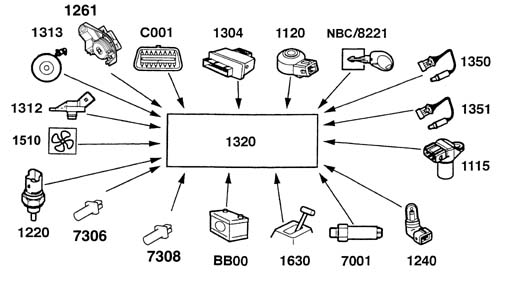
- 1320 - Engine management control unit
- NBC/8221 - NBC on board services control unit / Ignition switch connection
- 1120 - Knock sensor
- 1304 - Engine management twin relay
- C001 - Diagnostic equipment
- 1261 - Accelerator pedal position sensor
- 1313 - Engine speed sensor
- 1312 - Absolute pressure sensor
- 1510 - Engine cooling fans
- 1220 - Coolant temperature sensor
- 7306 - Speed regulator safety switch (clutch)
- 7308 - Speed regulator safety switch (brake)
- BB00 - Battery
- 1630 - Automatic transmission control unit (if fitted)
- 7001 - Power steering circuit pressure switch
- 1240 - Air temperature sensor
- 1115 - Engine timing sensor
- 1351 - Downstream lambda sensor
- 1350 - Upstream lambda sensor
Diagram showing output information
The diagram below illustrates the information leaving the Engine Management Node
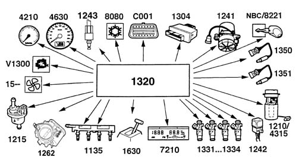
- 1320 - Engine management control unit
- NBC/8221 - NBC on board services control unit / Ignition switch connection
- 1241 - Exhaust air pump
- 1304 - Engine management twin relay
- C001 - Diagnostic equipment
- 8080 - Climate control system
- 1243 - Phase transformer solenoid valve
- 4630 - Speedometer
- 4210 - Rev counter
- V1300 - System failure bulb
- 1510 - Engine cooling fans
- 1215 - Carbon filter scrubbing solenoid
- 1262 - Motorized throttle
- 1135 - Ignition coils
- 1630 - Automatic transmission control unit
- 7210 - On-board computer
- 1331 - Injector
- 1332 - Injector
- 1333 - Injector
- 1334 - Injector
- 1242 - Exhaust air pump relay
- 1210/4315 - Cradle with electric pump and pressure regulator
- 1351 - Downstream lambda sensor
- 1350 - Upstream lambda sensor
MAIN MANAGEMENT STRATEGIES
Operating principle
All engine service points can be identified by means of two parameters:
- rpm;
- engine load.
Once these parameters have been obtained by processing, it is possible to calculate and then implement the injection (amount of fuel delivered and timing with combustion TDC), ignition (correct ignition advance) and any other functions for each engine service point.
In the Marelli M4MP2 system, rpm is measured directly by a sensor while engine load is determined indirectly on the basis of absolute pressure and air temperature, both measured in the intake manifold.
Specific ignition maps are drawn up during engine and vehicle testing. These store injection time/stage and ignition advance values and all other parameters required for correct engine operation.
These values are determined by mathematical extrapolation of parameters for any service point, even points that are not specifically mapped.
Calculated injection time values are also corrected on the basis of the signal from the lambda sensor, which determines continuous fluctuation of the mixture content about a stoichiometric level on the basis of specific operating strategies.
The system is therefore defined as "speed-density-lambda" type because injection time is mainly determined by these three parameters.
All specific operating situations that require specific adaptation of injection time/stage, ignition advance and other calculated parameters are managed by the engine management unit on the basis of signals from various system sensors.
Signal framework mangement
The term "signal framework" denotes the set of signals from a sensor on the crankshaft and a sensor on the camshaft. Because these are related by a specific reciprocal position, they provide the control unit with a synchronised signal sequence that that control unit is able to recognise.
Upon start-up, the control unit recognises the injection and ignition timing, which is essential for subsequent operation of all strategies.
This recognition is implemented on the basis of the interpretation of the series of signals from the phonic wheel sensor located on the crankshaft and the engine timing sensor on the camshaft.
There are sixty teeth on the flywheel, with two having been removed to produce discontinuity: the angle between two consecutive teeth is therefore equal to 6°: the signal is the sinusoid type and should be transformed into a digital signal by means of an A/D converter inside the control unit.
The signal coming from the timing sensor consists of a square wave that can be interpreted directly by the control unit.
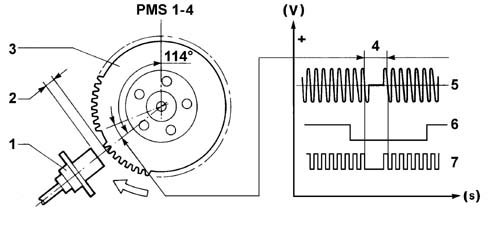
- 1 - RPM and TDC sensor
- 2 - Gap
- 3 - Phonic wheel 60-2 teeth
- 4 - Signal corresponding to two missing teeth
- 5 - Phonic wheel signal (engine speed sensor)
- 6 - Engine timing sensor signal
- 7 - Converted phonic wheel signal
Injection management
The injection management strategies serve the purpose of providing the engine with the correct amount of fuel at the required moment on the basis of engine operating conditions.
Calculating basic injection time
Injection management essentially involves computing injection time, determining injection stage and subsequent implementation of the stage by controlling the injector.
Base pulse constant is calculated by mathematical extrapolation from the speed-load map. the experimentaly obtained mapped values also depend on injector specifications. The final injection time is determined by means of a calculation algorithm whereby the base pulse constant is corrected by a series of coefficients that take into account the different engine operating conditions.
Cold start-up and running
During cold starts, the injection is managed simultaneously (full-group), i.e. not phased: this situation persists until the engine started. After this, management becomes phased.
During cranking by the starter motor, injection time is determined by a special map and depends on coolant temperature and barometric pressure.
During cold operation, the basid injection time is increased as appropriate by a factor inversely proportional to coolant temperature.
The management of the injection when the engine is started up is carried out in a phased, synchronous manner (the engine is considered to be started up from a speed defined during the calibration stage).
Full load
This strategy is enabled when the throttle exceeds a certain threshold: injection time is increased in this situation.l
Acceleration and deceleration
The acceleration or deceleration situation represents a transitory state that may be positive (acceleration) or negative (deceleration).
The transitory management strategy is very complex: in general, injection time is increased for positive transitories and reduced for negative states.
The extent of the correction basically depends on the following parameters:
- desire of the driver (accelerator pedal potentiometer speed regulator),
- variation in engine speed (engine speed sensor),
- throttle position (throttle casing),
- engine temperature (engine temperature sensor),
- intake air temperature (intake air temperature sensor),
- EGR solenoid valve position.
Cut off
The control unit enables cut off strategies when engine speed exceeds a certain threshold.
The cut-off strategy is implemented when the control unit detects the throttle in idle position (throttle potentiometer signal) in order to:
- reduce consumption,
- minimize emissions,
- avoid an excessive increase in the temperature of the catalyzer.
Engine fuel supply is re-enabled when the throttle is detected in an unclosed position or when speed drops below a threshold higher than the enablement threshold.
Power latch
The power latch function maintains the supply of the engine management node for serveral seconds after the ignition switch has been turned OFF.
This function allow the engine management node to manage the following parameters:
- engine cooling: if the temperature of the coolant is above a pre-set level, the NCM continues to operate the engine coolaing fans even after the igniton switch has been turned OFF.
- engine coolant temperature,.
- learning of the motorized throttle stop and maximum opening positions, for further details see "Throttle casing".
Rotation speed limiter
The strategy limits the maximum speed achievable by the engine by enabling cut-off.
Fuel pump drive
The fuel pump is controlled by the engine management unit via the twin relay.
The pump is stopped:
- if engine speed drops below a certain minimum threshold;
- after a certain time (about 5 seconds) with the key ON without start-up taking place (timed enablement);
- if the supply interruption function has been activated.
Injector control
The injector control is phased sequential type. During cold starts, the injectors are, however, controlled in parallel until the engine is started.
Altitude correction
The control unit detects atmospheric pressure and uses it to make appropriate corrections under the following conditions:
- with ignition switch in MAR position,
- with engine under high load and with low rpm.
Ignition management
Ignition management essentially consists of determining the required ignition advance on the basis of engine service conditions and then implementing the advance by controlling a power transistor located inside the control unit. The baseline advance value, calculated on the basis of engine load and speed, is then corrected on the basis of the various engine service conditions. The primary winding of each coil is supplied by battery voltage via a twin relay and is connected to the power transistor manifold built into the engine control unit. The broadcasting unit is earthed while the base receives control voltage from the control unit.
According to engine rotating speed and ignition advance to be implemented, the engine control unit establishes the moment at which conduction begins in the primary winding in order to achieve the required current intensity (saturation) in the primary winding immediately before interrupting the current. The angle of this moment naturally changes in relation to the combustion TDC of each cylinder: its advance is directly proportional to engine rpm because the time required to saturate the current in the coil primary winding is more or less constant: this is determined using appropriate coefficients stored at the mapping stage (dwell management).
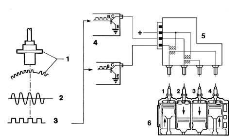
- 1 - RPM and TDC sensor with phonic wheel
- 2- Control unit input signal
- 3 - Signal converted in control unit (square wave)
- 4 - Internal power module
- 5 - Coil
- 6 - Spark plugs
The conduction start moment is also corrected on the basis of battery voltage.
The engine management unit therefore determines the moment at which current is cut off in the primary winding and converts the degrees of advance into the time required by the engine to move through this angle: this time is the advance in relation to combustion TDC with which the current at the base of the transistor is interrupted.
At the time when the current interrupts the current at the base of the power transistor, the primary winding earth connection is interrupted and a high tension discharge is therefore triggerd in the secondary coil.
Start-up
During start-up, it is not possible to manage advance normally because the considerable fluctuations in rotation speed will not allow correct calculation of the dwell and advance.
The control unit implements a fixed advance throughout the time the engine is cranked by the starter motor.
High temperatures
The base advance value is reduced when intake air temperature exceeds a certain threshold.
Cut off
The injection advance is reduced as cut-off approaches. the advance is then gradually restored to the base value from the moment fuel delivery is re-enabled.
Take-off
The strategy reduces advance during vehicle take-off from a standing start.
Engine idling
When the engine is idling, advance management is implemented independently of the base advance.
The idling advance value is corrected by a factor inversely proportional to the speed change in relation to a preset speed, in turn dependent upon coolant temperature.
In particuloar, advance is increased if speed drops and is reduced if speed increases to ensure speed stability.
Knock control
This strategy detects the presence of knock effects by processing a signal from the appropriate sensor. The strategy continuously compares a signal from the sensor with a threshold which is in turn continually updated to take into account background noise and engine ageing.
If the system detects the presence of knock, the strategy reduces the ignition advance until the effect disappears. The advance is then gradually restored to the baseline value or until the effect begins to arise again.
As advance is reduced, injection time is increased to prevent a dangerous increase in exhaust gas temperature.
Engine idle speed control management
The general aim of the strategy is to maintain engine speed around a stored value: the position assumed by the actuator is dependent on engine conditions and rpm and vehicle speed.
Start-up
When the ignition key is inserted, the actuator takes up a position dependent on engine temperature and battery voltage (open-loop position).
Engine running and accelerator pedal released
Engine speed varies according to engine temperature and is maintained constantly close to this value by altering plunger position to make up for any speed fluctuations.
This takes place particularly when external loads are activated (headlamps, heated rear window etc.).
When the air condition is activated and/or the power steering reaches the end of its travel, the strategy manages the actuator ahead of load activation due to the presence of load signals.
Normal motion
The actuator is in open-loop -position under these conditions.
Over-run
Under conditions of over-run, the control unit controls plunger position through a specific output curve (dash-pot curve), i.e. it delays the plunger's return to its seat to reduce the engine brake effect.
If the vehicle is in over-run status, information on speed in relation to engine speed allows the dash-pot effect to be managed and adjusted to the gear engaged.
EMISSION CONTROL DEVICE MANAGEMENT
Active charcoal filter scrubbing solenoid
The strategy controls carbon filter scrubbing solenoid position as follows:
- during start-up, the solenoid remains closed to prevent fuel vapours enriching the mixture;
- after a cold start, the solenoid remains closed throughout the engine heating stage;
- with the engine warm, the control unit controls the solenoid through its duty cycle to control the amount of fuel vapour sent to the intake (carbon filter scrubbing) on the basis of engine speed and load. In particular, the system alternates periods of scrubbing with periods of non-scrubbing: during the latter periods, the self-adaptive strategy is implemented while it is disabled during scrubbing;
- The solenoid remains closed during cut-off.
Lambda sensor heater
The control unit controls the heating power supply of both lambda sensors to bring the sensor up to steady-state conditions quickly and maintain temperature at optimum levels.
Exhaust air pump
The control unit operates the air pump via a relay in order to introduce air into the exhaust manifold during starting to improve the post-combustion of the exhaust gases and consequently the rapid heating of the catalyzer.
The pump is activated:
- with the engine started and the speed below 2500 rpm;
- for 10 seconds with the temperature below around -7 °C and for 30 seconds at temperatures of between around -7 and 15 ° C to prevent the pump and the valve seizing.
Exhaust gas recirculation solenoid valve (EGR)
The control unit controls the solenoid valve in duty-cycle to allow a controlled flow of exhaust gas ino the intake manifold in certain operating conditions to reduce the exhaust NOx content and improve thermal efficiency and consequently specific consumption.
The recirculation is inhibited with the engine cold.
Self-adaptation
The system includes a set of self-adaptive strategies for the following functions:
- mixture concentration control strategy (*)
- engine idle speed control strategy (*)
- knock control strategy (*)
- throttle closed position learning strategy (*)
- transmission ratio learning strategy.
Self-adaptive strategies are designed to adapt the system to engine specifications and changes (ageing).
The values are saved in the control unit permanent EEPROM memory whenever the ignition switch is turned OFF (generally when the engine is switched off).
These values are also preserved under the following circumstances:
- Memory deletion
- Control unit connector disconnection
- Battery disconnection
- Control unit remote loading.
Then, after each operation on the following components:
- Lambda sensor and injectors;
- Idle adjustment step motor;
- Knock sensor;
- Throttle potentiometer;
the defect deletion procedure must be carried out to recover the self-adaptive values stored in the control unit memory.
After carrying out the defect deletion process, the extreme positions of the throttle potentiometer must be detected as follows:
- Engine running;
- Accelerator pedal at rest;
- Press the accelerator pedal to the floor for a moment;
- Release the accelerator pedal.
Radiator fan management
The engine control unit controls radiator fan activation on the basis of cooloant temperature and presence or absence of a climate control system.
Two fan operating speeds are provided for versions with climate control system. These are managed in accordance with two different strategies.
On the basis of the coolant temperature:
- low speed: is activated when coolant temperature reaches threshold T1;
- high speed: is activated when coolant temperature reaches threshold T2.
Switching off takes place with a hysteresis of around 3°C.
On the basis of climate control system pressure switch condition:
- low speed: is activated when the pressure switch switches to level II;
- high speed: is activated when the pressure switch switches to level III.
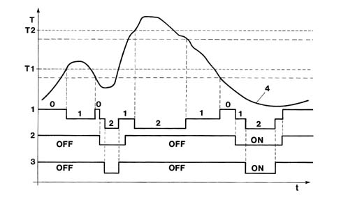
- ON pressure switch active
- OFF pressure switch deactivated
- 1 - Fan status 0=off/1=low speed/2=high speed
- 2 - pressure switch level II
- 3 - pressure switch level III
- 4 - Engine coolant temperature curve
DIAGNOSTICS
The system is fitted with a self-diagnostic function that checks for faults in the system.
EOBD
The control unit is equipped with a specific diagnostic system for the emission control system (EOBD, European On Board Diagnostic) This monitors the operation of all components that could directly or indirectly affect the correct operation of the emission control system.
Apart from component diagnostics, the system mainly performs the following functions:
- checking efficiency of the catalytic converter by means of a downstream lambda sensor;
- control of irregular combustion (that could irreparably damage the catalytic converter) by analysing signals from the rpm and engine timing sensors to differentiate between situations due to other causes (road conditions etc.).
Detectable faults are classified from into two categories from the viewpoint of on-board diagnostics (see the following table):
- slight defect that does not involve particular consequences;
- severe defect that involves a danger of exceeding the emission limits.
The fault also undergoes a validation procedure to exclude the possibility of sporadic situations or situations due to specific conditions.
Fault detection, if validated, leads to the fault being permanently saved and also exclusion of the sensor from the system until it is repaired.
The fault is automatically deleted from the memory after 40 operating cycles without detection.
An operating cycle consists of start-up, achievement of engine steady state temperature and subsequent key off.
Warning light bulb
Fault detection normally involves activation of a warning light on the dashboard in accordance with the following strategy:
- ignition switch OFF: warning light off;
- ignition switch OFF, engine off: warning light on:
- ignition switch ON, engine running, no permanent severe defect;
- if the contact has been on for more than three second before engine start-up, the warning light goes off immediately;
- if the contact has been on for less than three second before engine start-up, the warning light goes off after three seconds;
- ignition switch ON, engine running, at least one permanent severe defect present: warning light on.
The warning light bulb goes off if the defect changes from permanent to temporary. This change becomes operational after the successful completion of a diagnostic sequence.
Defining a diagnostic sequence:
- engine start-up;
- when control unit tested for faulty function, the defect was no longer detected;
- engine turn off.
The warning light bulb fails to come on in the following cases:
- speed irregularities caused by poor road conditions;
- start-up failure or stalling caused by fuel level dropping below minimum in fuel tank.
Under these conditions, the engine management control unit inhibits the diagnostic function.
Active diagnostics
The system can be tested using the diagnostic tester in three stages:
- display of a set of operating parameters (with engine off or running). A set of operating menus subdivided according to the various menus can be displayed in real time.
- display of errors present and error deletion. Errors are displayed up to a maximum of 10, of which 3 reserved for the EOBD. In some cases it is possible to identify fault specifictions i.e.: open circuit, short circuit to earth, short circuit to battery positive, consistency;
- activation of some components/functions (active diagnosis): it is possible to test the operation of the following components/functions that are governed independently of the engine control unit: engine idle adjustment actuator, injectors, exhaust air pump relay, fuel pump relay, charcoal filter scrubbing solenoid, EGR solenoid valve, heating of lambda sensor upstrem of catalytic converter, heating of lambda sensor downstream of catalytic converter, radiator fans, coils, rev counter signal, diagnostic warning light, excessive coolant temperature warning light.
Conditions for carrying out active diagnosis are as follows:
- ignition switch ON;
- engine off;
- vehicle at standstill
Recovery strategy
If the sensors are found to be faulty, the control unit replaces the missing data, if possible, by reconstructing it using software (recovery) so that the engine will continue to operate.
List of functions that can be tested
Definition | Recovery functions | Minor fault | Serious fault |
|---|---|---|---|
engine management control unit; | --- | X | X |
battery voltage | X | X | --- |
coolant temperature sensor | X | X | --- |
air temperature sensor; | X | X | --- |
absolute pressure sensor | --- | X | --- |
throttle position sensor track 1 | --- | X | --- |
throttle position sensor track 2 | --- | X | --- |
inconsistency between track 1 and 2 signals | --- | X | --- |
injection timing sensor | X | X | --- |
engine speed sensor; | --- | X | --- |
knock sensor | X | X | --- |
power steering pressure switch | --- | X | --- |
upstream lambda sensor | X | X | --- |
downstream lambda sensor | X | X | --- |
upstream lambda sensor heating control | X | X | --- |
downstream lambda sensor heating control | X | X | --- |
vehicle speed sensor; | --- | X | --- |
twin relay operation | --- | X | --- |
exhaust air injection pump relay operation | --- | X | --- |
sensor power supply | --- | X | --- |
ignition coils operation (1 - 2 - 3 - 4) | X | X | X |
injector operation (1 - 2 - 3 - 4) | --- | X | --- |
carbon filter scrubbing solenoid control | X | X | --- |
phase transformer solenoid valve | --- | X | --- |
radiator fans | X | X | --- |
radiator cooling fan 1 control relay control | X | X | --- |
radiator cooling fan 2 control relay control | --- | X | --- |
system failure bulb control | --- | X | --- |
system failure line control | --- | X | --- |
Mixture concentration self-adaption | --- | X | X |
coded immobiliser communication | --- | X | --- |
Coded immobiliser code store | --- | X | --- |
speed governor switch | --- | X | --- |
brake switch (speed governor) | --- | X | --- |
coolant temperature warning light bulb control (NBC) | --- | X | --- |
coolant temperature temperature gauge control (NBC) | --- | X | --- |
engine speed information (NBC) | --- | X | --- |
climate control system compressor information | --- | X | -- |
dialogue at CAN | --- | X | --- |
dialogue with NBC at CAN | --- | X | --- |
dialogue with NFR at CAN | --- | X | --- |
automatic transmission communication (CAN line) | --- | X | X |
catalytic converter ageing information | --- | X | X |
exhaust gas recirculation system information | --- | X | X |
evaporation control system information | --- | X | X |
exhaust air injection system information | --- | X | X |
fuel injection system information | --- | X | X |
mixture concentration information | --- | X | |
misfiring | --- | X | X |
ELECTRIC - ELECTRONIC CIRCUIT
Engine management control unit
The control unit uses a FLASH EPROM.
This new technology allows settings to be changed (e.g. to improve driving comfort) without having to remove the control unit or replace the EPROM.
The operation involves remote loading of a new program into the control unit memory by means of the tester via the tester input after checking that system elements are working normally (no faults).
Functions managed by the control unit
Calculation of injection time, timing and operation of injectors depending on the following parameters:
- accelerator pedal potentiometer,
- torque request coming from other nodes (speed governor, climate control, Brake Node)
- engine temperature (coolant temperature sensor),
- intake air mass (intake air temperature sensor and absolute pressure sensor),
- position of cylinder no. 1 (timing sensor),
- engine operating conditions: starting, slowing down, constant speed, transition speeds, cut off, recovery, (motorized throttle, engine speed sensor, vehicle speed sensor),
- Lambda sensor signal,
- carbon filter scrubbing (carbon filter scrubbing solenoid);
- intake air pressure (intake air pressure sensor),
- battery voltage,
- detonation sensor,
- ehxaust air injection (exhaust air pump);
Calculation of injection and ignition time correction dependent on the following parameters:
- crankshaft speed and position (engine speed sensor),
- intake air pressure (intake air pressure sensor),
- detonation sensor,
- climate control compressor status,
- engine idle speed,
- position of cylinder no. 1 (timing sensor),
- engine temperature (coolant temperature sensor),
- vehicle speed (vehicle speed sensor),
- intake air mass (intake air temperature sensor and absolute pressure sensor),
- battery voltage,
Management of the internal functions:
- engine idle speed adjustment (motorized throttle);
- supply of the sensors (twin relay);
- fuel supply (fuel pump);
- lambda sensor heating (lambda sensor heater);
- carbon filter scrubbing (carbon filter scrubbing solenoid);
- ehxaust air injection (exhaust air pump);
- restriction of the maximum engine speed;
- variable timing;
- power latch (maintenance of the Engine Management Node supply after the ignition has been switched off);
- self-diagnosis;
Management of the external functions:
- engine coolant temperature information (sent to the instrument panel via the Body Computer Node);
- engine coolant overheating information (sent to the instrument panel via the Body Computer Node);
- fuel consumption information (sent to the instrument panel via the Body Computer Node);
- system failure warning light (sent to the instrument panel via the Body Computer Node);
- fuel reserve level (information from the Body Computer Node);
- connection with service tester and EOBD tester;
- interfaces with the other nodes on the vehcle (Automatic Transmission Node, Brake Node, Body Computer Node, Climate Control Node via the CAN:
- speed regulator safety switches (brake and clutch)
- coded anti-starting;
- engine cooling (operation of the fans);
- climate control compressor engagement authorization.
Control unit
The following diagram shows the control unit
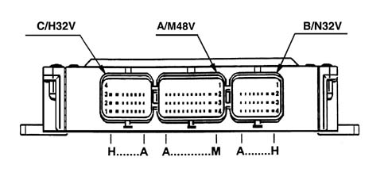
Engine speed sensor
The sensor is fastened to the engine block on the flywheel side.
Operating principle
The sensor takes the form of a tubular case (1) containing a permanent magnet (3) and an electrical winding (2).
Due to the passage of the phonic wheel teeth, the magnetic flux set up by magnet (3) undergoes fluctuations due to changes in the gap.
These fluctuations set up an electromotive force in winding (2) and a voltage is set up at the terminals that is alternatively positive (tooth facing sensor) and negative (gap facing sensor). Rpm sensor peak output voltage depends, all else being equal, on the distance between the sensor and the phonic wheel teeth (gap).
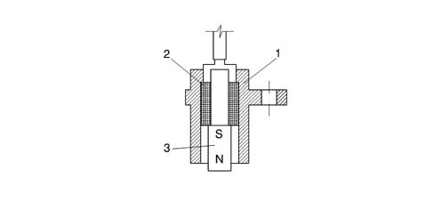
Sensor resistance may be measured by disconnecting the connector and connecting an ohmmeter at the sensor terminals.
The frequency and amplitude of the signal are proportional to the engine rotation speed.
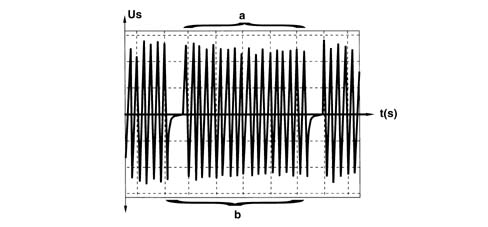
- Us - induced voltage
- a - 58 periods
- b - corresponds to 1 complete revolution of the crankshaft
- t - time
Sensor specifications:
- Resistance: from 300 to 400 ohm
- Gap 1mm ± 0.5 (not adjustable)
Ring gear specifications:
- 60-2=58 teeth (1 tooth corresponds to 6° of the crankshaft).
Motorized throttle
The throttle casing incorporates several ignition system components.
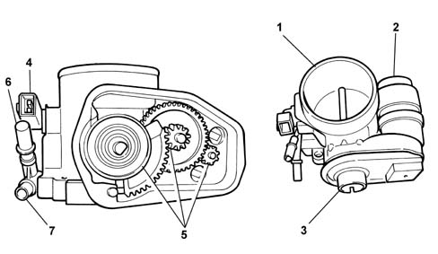
- 1 - Throttle
- 2 - Motor
- 3 - Twin track throttle potentiometer
- 4 - Intake air temperature sensor
- 5 - Idler gears
- 6 - Fuel vapour reicrulation pipe from canister
- 7 - Oil vapour reicrulation pipe from engine
The opening of the throttle is not managed directly through the cable operated by the accelerator pedal but by means of an electrical signal coming from the accelerator pedal potentiometer.
This allows the NCM to manage any requests coming from other nodes at the same time:
- climate control node,
- Brake Node,
- Cruise Control,
- Automatic Transmission Node,
etc.
The position of the throttle is determined by the motor on the throttle casing which is, in turn, managed by the NCM.
A twin track potentiometer positioned on the throttle axis allows the NCM to recognize the position with precision; this potentiometer cannot be adjusted.
This information is used to recognize foot raised or end of travel conditions.
Faults that can be detected
Engine no longer operated (open circuit or short circuit)
The NCM receive two conflicting pieces of electrical information:
- accelerator pedal position (from the accelerator potentiometer),
- throttle position (from the throttle potentiometer).
The throttle is in the rest position.
This position is not the position that relates to the engine idle speed which, in the case of the motorized throttle, corresponds to a throttle opening of around 8° .
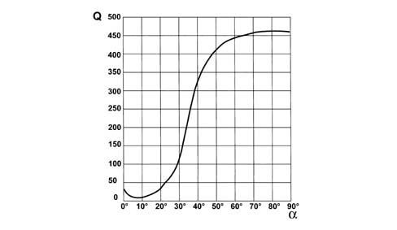
- Q - air flow rate in kg/h
- %agr; - throttle opening angle in degrees
With the motor not supplied, the throttle finds itself in the mechanical closed position which, in effect, corresponds to the rest position.
In this position, thanks to the shape of the throttle casing, the air flow rate is around 8 times higher than the minimum.
The NCM manages the fuel flow rate and the ignition advance according to the position of the accelerator pedal.
Engine permanently operated
The NCM receive two conflicting pieces of electrical information:
- accelerator pedal position (from the accelerator potentiometer),
- throttle position (from the throttle potentiometer).
The throttle is in the maximum opening position.
The NCM manages the fuel flow rate and the ignition advance according to the position of the accelerator pedal restricting the engine speed to 1500 rpm.
The NCM continuously checks the information relating to the throttle potentiomter and to the pressure sensor.
This check makes it possible to check the consistency of the throttle position in relation to the engine rotation speed.
In this case the NCM adopts strategies aimed to reduce engine performance and communicates the failure status by lighting up the diagnostic warning light.
One of the two potentiometer tracks defective (short circuit or open circuit)
The NCM considers the information coming from the track that is working properly.
In this case the NCM adopts strategies aimed to reduce engine performance and communicates the failure status by lighting up the diagnostic warning light.
Self-learning procedure
The self-learning procedure consists of causing the NCM to recognize the motorized throttle closed and maximum opening positions; this is done in the following cases:
- replacement of the NCM,
- replacement of the throttle casing,
- repair of the throttle casing following the detection of a fault.
To carry out the procedure:
- start the engine,
- carry out an initilization cycle for the self-adjustment parameters, during this stage the NCM reads the self-adjustment parameters in the EEPROM,
- stop the engine, the power latch sequence is launched,
- wait until the end of the power latch sequence (10 minutes max.), at the end of this sequence the throttle will be placed in the maximum opening position, then in the rest position,
- place the key in the ON position,
- wait until any errors are zeroed,
- start the engine without accelerating and let it idle for two minutes, during the first 4 seconds the NCM will record the accelerator pedal potentiometer idle position.
The consequence of not applying the self-learning procedure
Not following the self-learning procedure does not allow the NCM to manage the operation of the engine correctly; in this case there could be damage to the motorized throttle because the NCM does not recognize the maximum opening and closing positions.
However, after the engine is switched off for the first time, the NCM automatically carries out the self-learning procedure during the power latch procedure (placing the throttle in the maximum opening position and then in the closed position).
During normal use of the vehicle the NCM carries out these self-learning cycles regularly to update the values recorded in the EEPROM.
Accelerator potentiometer
The accelerator potentiometer is located in the engine compartment and is connected to the accelerator pedal by a cable.
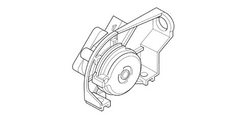
The potentiometer receives a 5V supply from the NCM to which it transmits a voltage which varies according to the position of the pedal.
This signal is managed by the NCM in the same way as the signals from the following nodes:
- Climate Control Node,
- Automatic Transmission Node,
- Brake Node,
- Cruise Control
When the engine is started, the opening of the throttle is pre-programmed to a certain position irrespective of the position of the accelerator pedal.
Self-learning procedure
The self-learning procedure consists of making the NCM recognize the potentiometer rest position (corresponding to the rest position of the pedal), the pedal end of travel position is automatically calculated from the rest position.
The self-learning procedure is carried out in the following cases:
- replacement of the NCM,
- replacement of the accelerator pedal potentiometer,
- repair of the accelerator pedal following the detection of a fault,
- reprogramming of the NCM.
Potentiometer self-learning procedure if the NCM is being reprogrammed
After reprogramming, wait for 5 seconds before turning the key to the OFF position, during these 5 seconds the NCM will carry out the position learning procedure for the motorized throttle:
- keep the key in the OFF position for 5 seconds, during these 5 seconds the NCM will memorize the new data in the EEPROM and re-establish communication with the NBC;
- start the engine without accelerating and let it idle for two minutes (start the engine with the temperature of the coolant below 60°C), during the first 4 seconds the NCM will record the accelerator pedal potentiometer idle position.
Potentiometer self-learning procedure if a component is being replaced
The components involved are:
- NCM,
- throttle body,
- accelerator pedal potentiometer,
- Lambda sensors,
To carry out the procedure:
- start the engine,
- carry out an initilization cycle for the self-adjustment parameters, during this stage the NCM reads the self-adjustment parameters in the EEPROM,
- stop the engine, the power latch sequence is launched,
- wait until the end of the power latch sequence (10 minutes max.), at the end of this sequence the throttle will be placed in the maximum opening position, then in the rest position,
- place the key in the ON position,
- wait until any errors are zeroed,
- start the engine without accelerating and let it idle for two minutes, during the first 4 seconds the NCM will record the accelerator pedal potentiometer idle position.
The consequence of not applying the self-learning procedure
Not following the self-learning procedures does not allow the NCM to manage the operation of the engine correctly.
Phase transformer solenoid valve
The solenoid valve which manages the phase transformer is located on the monobloc, timing side and receives a 12V supply and is controlled by the engine management node being earthed.
The NCM operates the solenoid valve in the following conditions:
- engine speed below 4300 rpm,
- high engine torque,
- oil temperature between 40°C and 140°C.
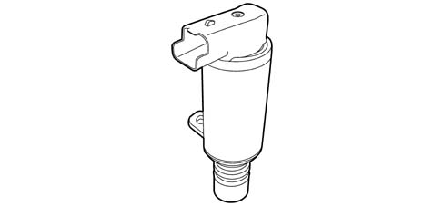
When the solenoid valve is activated, the pressurized oil, coming from the lubrication circuit, is channelled into the camshaft operating system rotating it through 20°.
For the correct management of the solenoid valve, the NCM needs to know the temperature of the engine oil, in effect, below 40°C and above 140°C the density of the oil does not allow the NCM to operate the solenoid valve correctly.
The temperature of the engine oil is calculated starting with that of the engine coolant. In effect, the oil temperature sensor, on the oil sump, detects a different temperature from that on the monobloc, whilst conversely the temperature of the coolant is very close to that of the oil.
The calculation of the temperature of the oil is carried out using parameters that take the different specifications of the two fluids into account.
Absolute pressure sensor
The pressure sensor continuously detects the pressure of the air in the intake manifold.
The pressure sensor is the piezoresistive type. The sensitive element consists of a resistive bridge serigraphed on a flexible diaphragm which separates the measuring chamber (connected to the inlet manifold) and the reference chamber (in which the vacuum has been created).
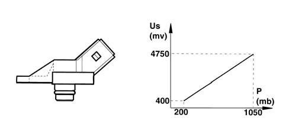
Receiving a 5V supply from the control unit, this sensor provides an output voltage proportional to the absolute pressure measured.
This information, transmitted to the Engine Management Node, makes it possible to:
- calculate the mass of air introduced into the engine (using the engine speed and air temperature parameters),
- adapt the fuel flow rate injected according to variations in the engine load and atmospheric pressure,
- vary the ignition advance.
The variation in altitude is used to calaculate the injection times; in effect, the mass of intake air varies according to:
- atmospheric pressure (consequently altitude),
- air temperature,
- engine speed.
The measurements are taken:
- each time the engine is started,
- at high engine load and low speed conditions (climbing a hill, change in altitude and atmospheric pressure).
Engine timing sensor
The engine timing sensor, together with the engine speed and TDC signal, allows the control unit to recognise cylinder sequence when implementing phased injection. This signal is generated by a Hall-effect sensor fitted near the exhaust camshaft.
The sensor angular position cannot be adjusted.
The sensor information makes it possible to:
- phase the injection and ignition coils sequentially,
- decrease the ignition advance to reduce knocking.
The sensor receives a 5V supply and provides a signal that can be directly used by the Engine Management Node.
Knock sensor
This piezoelectric sensor is fitted on the engine block in a symmetrical position in relation to cylinder pairs 1-2 and 3-4.
This positioning is determined by the need to detect the onset of knock in a similar way for all cylinders.
This sensor is used to measure knock, a vibration effect caused by irregular mixture combustion in the combustion chamber.
If repeated, this effect may harm mechanical parts due to an anomalous temperature increase in the walls.
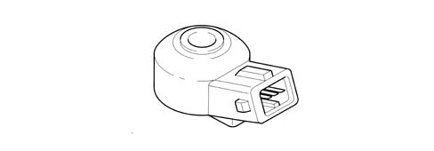
The sensor provides a voltage proportional to the vibrations detected.
If there is detonation, the NCM reduces the ignition advance between 2° and 12°, then restores normal conditions later on.
Parallel to the variation in the advance, the NCM manages the enrichment of the air/fuel mixture to prevent an increase in the temperature of the exhaust gases.
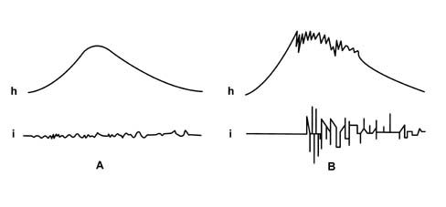
- A - operation without knocking
- B - operation with knocking
- h - variation in the cylinder pressure
- i - detonation sensor signal produced
Air temperature sensor
The sensor is installed on the throttle body.
It consists of a plastic case with the actual resistance element fitted at one end. This takes the form of an NTC thermistor (Negative Temperature Coefficient - i.e. the sensor electrical resistance falls as temperature rises).
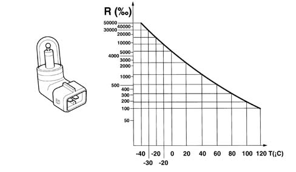
The reference voltage is 5V. Because the control unit input circuit is designed as a voltage divider, this voltage is distributed between a resistance present in the control unit and the sensor NTC resistance. The control unit is therefore able to assess sensor resistance changes via changes in the voltage and thus obtain temperature information.
The graph shows the sensor specification curve, which may be measured by disconnecting the connector and connecting an ohmmeter to the sensor terminals.
Coolant temperature sensor
The sensor is installed on the thermostat body.
It consists of a brass case that acts as the actual resistance element. It takes the form of an NTC thermistor (Negative Temperature Coefficient - i.e. the sensor electrical resistance falls as temperature rises).
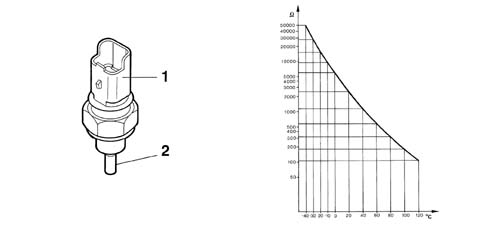
- 1 - Sensor connector
- 2 - NTC pad housing
The reference voltage is 5V. Because the control unit input circuit is designed as a voltage divider, this voltage is distributed between a resistance present in the control unit and the sensor NTC resistance. The control unit is therefore able to assess sensor resistance changes via changes in the voltage and thus obtain temperature information.
The graph shows the sensor specification curve, which may be measured by disconnecting the connector and connecting an ohmmeter to the sensor terminals.
Ignition coils
The ignition circuit is the inductive discharge, static advance type where the high tension is supplied by two twin output coils incorporated in a single element and fitted directly above the spark plugs (no high tension leads).
In this type of coil the current at the secondary winding (discharge current) always has the same polarity: therefore one circuit terminal is positive and the other negative.
This means that the discharge current in the secondary winding always flows in the same direction and therefore the sparks for the two cylinders connected to the coil strike in the opposite way:
- in the spark plug with the positive centre electrode the spark strikes from the earth electrode to the centre electrode;
- in the spark plug with the negative centre electrode the spark strikes from the centre electrode to the earth electrode;
As a result, the wear of the electrodes in the two spark plugs is different.
Since the intensity of the spark depends on the resistance between the electrodes (dielectric), the following two conditions occur:
- in the cylinder in the crossover stage the spark is weak (lost spark) as a result of almost atmospheric pressure in the actual cylinder
- in the cylinder at the end of the compression stroke the spark is intense (useful spark) as a result of the high pressure in the combustion chamber.
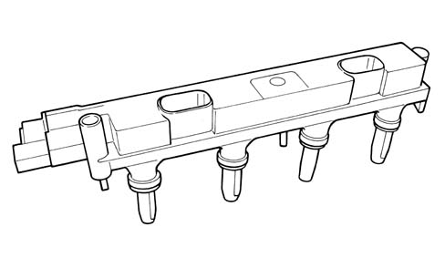
The advance is controlled by the NCM in accordance with a set map based on the following parameter:
- engine speed,
- inlet pressure.
Power steering pressure switch
This sensor, fitted on the pump high pressure outlet pipe, consists of a pressure switch that closes when the hydraulic pressure exceeds a certain level (around 35 bar) corresponding to the steering almost in the end of travel position: this information is used to manage the idle speed control actuator in advance of power absorption (by the power assisted steering pump) due to steering.
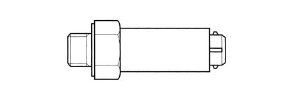
Injectors
The injectors have the task of supplying the amount of fuel required for the operation of the engine: the fuel is injected into the intake manifold immediately upstream of the inlet valves.
The injectors are the twin jet, top-feed type with the top of the casing also housing the electrical winding connected to the connector (3) terminals.
The injectors receive a 12V supply and are operated by being earthed.
The NCM controls the injectors separately when the inlet valves are closed in the following order: 1, 3, 4, 2.
When the current passes through the winding, the magnetic field created attracts the shutter opening the injector and causing the flow of fuel. There are two seals, one of the fuel manifold side (1) and one on the intake manifold side (2). A tooth (4) determines the angular position of the injector in relation to the intake manifold to ensure that the jets are correctly directed in relation to the inlet valves.
Injector resistance is around 14.5 ohm and may be measured by disconnecting the connector and connecting an ohmmeter as shown in the figure.
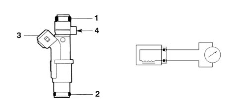
The quantity of fuel injected depends on the injector opening time (injection time).
Fuel drip tray assembly
Fuel pump
The pump is housed inside the fuel tank on a special drip tray which also supports the level gauge and is fitted with a filter on the pump inlet. The pressure regulator is also fitted on the pump supply. The pump is the single stage, peripheral flow type and is designed to run on unleaded petrol. The rotor is driven by a direct current electric motor supplied by a relay operated by the control unit to ensure:
- the pump cuts out if the engine speed goes below a certain level;
- the timed operation (around 5 seconds) each time the ignition is turned to the ON position, even if the engine is not started up
- operation with the engine started.
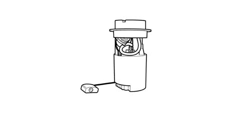
The pump is equipped with an excess pressure valve that short circuits the supply if the pressure in the supply circuit exceeds around 5 bar to prevent the electric motor from overheating. In addition, the pressure regulator prevents the entire fuel circuit from draining when the pump is not working, maintaining a residual pressure in the circuit for a certain length of time.
Fuel pressure regulator
This is a device located in the top of the drip tray.
The function of the regulator is to:
- keep the supply pressure constant in all engine operating conditions,
- maintain a residual pressure for a pre-set period, after the engine switches off, to facilitate starting the engine when warm, preventing the formation of fuel vapours inside the supply circuit.
The pressure regulator is calibrated in the factory to maintain a residual pressure of 3.50 bar.
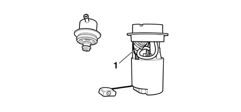
- 1 - pressure regulator
Fuel filter
The filter, fitted on the supply pipe is located near the tank and comprises an aluminium outer casing and an internal element made from special paper with a high filtering capacity that traps impurities up to 8 microns in diameter.
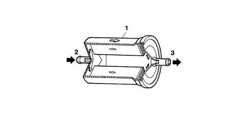
- 1 - Arrow showing fitting direction;
- 2 - Fuel inlet from the tank;
- 3- Fuel outlet to the manifold.
When fitting the filter, pay attention to the direction of the arrow on the actual filter.
Twin relay
The twin relay comprises:
- a main relay (A);
- a power relay (B);
The main relay (A) supplies the following components:
With the ignition switch turned off:
- no supply.
With the ignition switch turned on or with the engine running:
- engine management control unit (1)
- power relay (B).
After the ignition switch has been turned off:
- the Engine Management Node for a defined period (power latch) in order to:
- reposition the idle speed adjustment actuator and facilitate post-starting when warm,
- manage the engine cooling,
- carrying out the self-learning of the motorized throttle minimum and maximum opening positions.
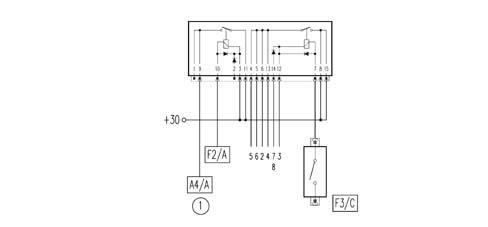
The power relay (B) supplies the following components.
With the ignition switch turned off:
- no supply.
With the ignition switch turned on or with the engine running:
- ignition coil (2);
- carbon filter scrubbing solenoid valve (3);
- throttle casing heater (4);
- injectors (5);
- fuel pump (6);
- Lambda sensor heaters (7);
- EGR solenoid valve (8).
The supply is maintained for 2 to 3 seconds, then interrupted if the engine is not started (no engine speed signal) or if the speed goes below a minimum level.
After the ignition is switched off:
- no supply.
Activated charcoal filter
The active charcoal filter is fitted under the bodyshell. It consists of carbon granules that trap fuel vapours entering intake (2). Warm flushing air enters intake (4) and flows over the carbon granules to remove fuel vapours and carry them towards outlet (3) and then on to the cut-off valve. Air entering intake (4) may also be drawn in by the vacuum in the tank to ventilate the tank.
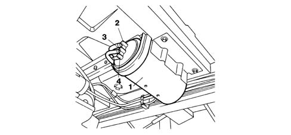
- 1 - Carbon filter
- 2 - Vapour inlet (from the tank)
- 3 - Vapour oulet (to the manifold)
- 4 - Scrubbing air intake
Active charcoal filter scrubbing solenoid
The charcoal filter scrubbing solenoid valve is located between the active charcoal filter and the throttle casing.
This valve, the normally closed type, is operated by the NCM at 12V in duty-cycle allowing the recirculation of the fuel vapours contained in the charcoal filter, thereby controlling the flow reaching the intake manifold.
Lambda sensors
The Lambda sensors measure exhaust gas oxygen content: one is fitted on the exhaust pipe upstream of the catalytic silencer, the other downstream of the catalyzer.
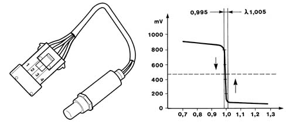
- Lambda = 1 Ideal mixture (stoichiometric) Lambda > 1 Lean mixture
- Excess air; CO level tends to be low
- lambda < 1 rich mixture
- Lack of air; CO level tends to be high
- Resistance: 4,5 ± 0.5 Ohm at 20° C
The sensor output signal is sent to the NCM for retroactive correction (feedback) of the mixture concentration. When the sensor supplies a low signal (voltage lower than 200 mV), the control unit detects a lean mixture and increases injection time. Then when the sensor signal is high (voltage higher than 800 mV), the control unit detects a rich mixture and decreases injection time. This event sequence is repeated with a frequency in the order of tens of Hertz to ensure that the engine runs on a mixture that fluctuates constantly about a stioichiometric level. At temperatures lower than 300° C, the ceramic material is inactive and the sensor cannot therefore send reliable signals: the sensor is fitted with an electrical heater coil to ensure fast heat at start-up and maintain a minimum temperature.
During certain engine operating stages the NCM does not take the Lambda sensor signal into account, namely:
- with the engine cold (temperature below 20°C),
- engine operating at high speed.
The downstream sensor is identical to the upstream sensor.
Sensor heater resistances may be measured by disconnecting the connector and connecting an ohmmeter as shown in the figure.
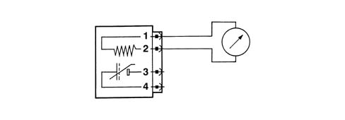
Catalytic silencer
The catalytic converter is a device that can remove the three main polluting compounds present in exhaust gases simultaneously: unburnt hydrocarbons (HC), carbon monoxide (CO) and nitrogen oxides (NOx).
Two types of chemical reaction take place inside the converter:
- oxidation of CO and HC to carbon dioxide (CO2) and water (H2O);
- reduction of NQx to nitrogen (N2).
This reactions can take place very quickly due to the presence of a layer of active substances (platinum and rhodium) inside the converter structure (ceramic mount) that accelerate the conversion rate of harmful substances enormously. The efficiency of this conversion process is affected by the fact that the concentration of the mixture on which the engine runs fluctuates continuously about a stoichiometric level. This is achieved by the feedback control exercised by the control unit on the basis of signals from the lambda sensor. Lastly, the conversion processes are activated at temperatures in excess of 300 - 350° C (the optimum temperature is between 600° and 800°C): it is therefore essential for the catalytic converter to reach this temperature as quickly as possible so that it can work correctly.
Temperatures around 1000°C lead to rapid damage of the catalyzer; a correct air/fuel mixture together with precisely calculated ignition times keep the catalyzer at the ideal operating temperature.
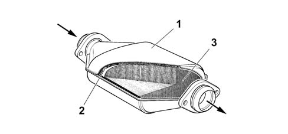
- 1 - External case in steel
- 2 - Thermal insulation
- 3 - One-piece ceramic structure
Exhaust air injection system
The exhaust air injection system consists of the following elements:
- Electric air pump
- Supply relay
- Cut out valve
- Exhaust manifold
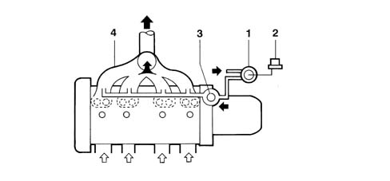
Air pump relay
The relay receives a 12V supply and is operated by the NCM, it is designed to supply the exhaut air injection pump.
The NCM controls the relay:
- for around 10 seconds at temperatures below -7°C, to prevent the pump and the cut out valve from seizing,
- for around 30 seconds at temperatures between -7°C and 15°C, to prevent the pump and the cut out valve from seizing,
- for around 80 seconds at temperatures between 15°C and 80°C, with around 20% enrichment of the mixture.
The relay is activated when the engine is started and during idling and is no longer operated at speeds above 2500 rpm.
Air pump
The electric air pump is located in the engine compartment and is operated by the NCM through the activation of the relay with a flow rate of around 20 kg/h.
The pump blows air through the exhaust manifold upstream of the catalyzer, this operation gives rise to post-combustion.
The post-combustion increases the temperature of the exhaust gases helping the catalyzer to reach optimum operation more quickly.
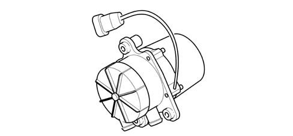
Cut out valve
This is located in the air injection circuit between the air pump and the exhaust manifold and has the following functions:
- to insulate the air injection circuit when the air pump is not working, preventing the intake of gases by the exhaust manifold;
- ensuring the immediate cut out of air injection when the pump is no longer supplied.
When the air pump is activated, the pressure in the pipe reaches the upper capsule and overcomes the resistance of the spring, opening the valve. As soon as the pump is deactivated, the pressure is reduced and the spring recalles the valve, closing it.
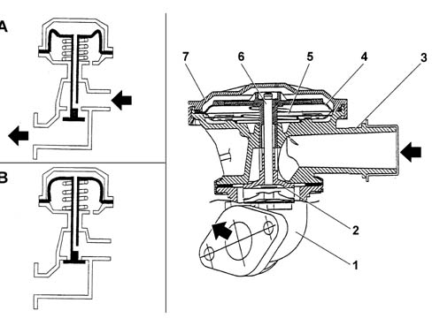
- A - air pump working
- B - air pump deactivated
- 1 - Exhaust manifold
- 2 - Valve head
- 3 - Valve body
- 4 - Membrane
- 5 - Spring
- 6 - Stem
- 7 - Capsule cover
Applies to: all engines; all production periods
 Removing
Removing
 Refitting
RefittingOp. 0010T84 COOLANT FOR AIR CONDITIONING SYSTEM DEHYDRATE AND RECHARGE
Op. 5530B56 BATTERY DRIP TRAY COVER - R.R.
- Disconnect the negative battery terminal.
Op. 7040H29 FRONT PILLAR LOWER COVER (ONE), LEFT OR RIGHT - R.R.
- < R1 > [Both]
Op. 7040A45 FACIA RH SIDE COVER - R R
Op. 7040G22 FACIA COMPARTMENT LIGHT SWITCH/BULB HOLDER - R+R
Op. 7040A31 FLAP ASSEMBLY - R R
- < R1 > [Right side]
Op. 5010B70 SIDE CONNECTOR BETWEEN AIR. CON. CASING AND SOLENOID VALVES FOR REAR SEATS
- < R1 > [Right side]
Op. 7040A44 SEAT INTERIOR GUARD - R R
Op. 7040A68 GRILLE FOR CENTRE DASHBOARD SPEAKER - R.R.
- < R1 > [Both]
Op. 7040A47 ODDMENTS POCKET UNDER DASHBOARD - R.R.
Op. 7040A60 UNDER FACIA TRIM - R+R
- < R1 > [Left side]
Op. 5010B70 SIDE CONNECTOR BETWEEN AIR. CON. CASING AND SOLENOID VALVES FOR REAR SEATS
- < R1 > [Left side]
Op. 7040A65 PASSENGER COMPARTMENT BOX LOCK , ONE , R R
- < R1 > [Both]
Op. 7040A89 SPEAKER GRILLE (ONE) LH OR RH ON INSTRUMENT FACIA - R R
Op. 2125C24 GEAR LEVER KNOB - R + R
Op. 7040A60 UNDER FACIA TRIM - R+R
Op. 7040A26 STEERING COLUMN TRIM - R+R
Op. 5580C18 AIR BAG MODULE - R+R
Op. 4110A10 STEERING WHEEL - R+R FOR REPLACEMENT OR CHECKS
Op. 5550A10 STALK UNIT ASSEMBLY - R+R
Op. 4110A26 STEERING WHEEL ADJUSTMENT PLATES - R.R.
Op. 5580E08 AERIAL FOR ALPHA CODE - R R
Op. 5520A10 IGNITION SWITCH ASSEMBLY - R+R
Op. 4110A30 SUPPORT WITH STEERING CONTROL SHAFTS - R+R - INCLUDES R+R STEERING WHEEL
Op. 5010C38 L/H OR R/H SIDE AIR OUTLET (ONE) ON FASCIA - R+R
- < R1 > [Both]
Op. 5010C30 CENTRAL AIR OUTLET ON FASCIA - R+R
Op. 7040A74 TRIM UNDER CONTROL PANEL - R.R.
Op. 5580C22 AIR BAG MODULE PASSANGER SIDE R R
Op. 5010B66 AIR DUCT BETWEEN TIMING CASING AND CENTRE VENT IN DASHBOARD - R.R.
Op. 5580P20 CENTRALINA DEL CONNECT - S.R.
Op. 5580P24 CONNECT CONTROL UNIT SUPPORT - R.R.
Op. 5580P22 CONNECT COOLING FAN - R.R.
Op. 5560B09 INSTRUMENT PANEL WITH CONNECT VIEWER - R.R.
Op. 5010D56 SOLAR SENSOR - R R AFTER CHECKING ELECTRICAL SYSTEM
Op. 7040A39 DEVICE FOR DRIVER`S SEAT SQUAB LUMBAR ADJUSTMENT - R R
- < R1 > [Both]
Op. 7040A69 DASHBOARD COVER UPPER TRIM - R.R.
Op. 7040H30 FRONT PILLAR TRIM - R R
- < R1 > [Both]
Op. 7040A10 L/H OR R/H FRONT SEAT (ONE) - R+R
Op. 5010B24 UNDER-FACIA AIR DUCTS R R
Op. 7040A98 INSTRUMENT FACIA TRIM SUPPORT BEAM - R R WITH FACIA REMOVED
Op. 5040C22 AIR CONDITIONING FAN ASSEMBLY - R.R.
Op. 5040C14 AIR CONDITIONER HEATER/DISTRIBUTOR UNIT - R+R WITH FASCIA REMOVED
Op. 3380A10 HANDBRAKE LEVER - R+R
Op. 7065C56 ODDMENT COMPARTMENT UNDERNEATH FRONT SEATS - R.R.
- < R1 > [Both]
Op. 7045A10 L/H OR R/H FRONT SEAT (ONE) - R+R
- < R1 > [Both]
Op. 7045A22 L/H OR R/H FRONT SEAT SUPPORT/GUIDE - R+R WITH SEAT REMOVED
- < R1 > [Both]
Op. 7040L40 REAR COMPARTMENT SCUFF STRIP - R R
- < R1 > [Both]
Op. 7040L17 PASSENGER COMPARTMENT FLOOR FRONT CARPET - R R
1. Release the connector and remove it.
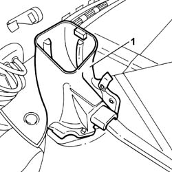
Applies to: all engines; all production periods
Refitting
Removing- Position the connector in the housing.
Op. 7040L17 PASSENGER COMPARTMENT FLOOR FRONT CARPET - R R
Op. 7040L40 REAR COMPARTMENT SCUFF STRIP - R R
- < R1 > [Both]
Op. 7045A22 L/H OR R/H FRONT SEAT SUPPORT/GUIDE - R+R WITH SEAT REMOVED
- < R1 > [Both]
Op. 7045A10 L/H OR R/H FRONT SEAT (ONE) - R+R
- < R1 > [Both]
Op. 7065C56 ODDMENT COMPARTMENT UNDERNEATH FRONT SEATS - R.R.
- < R1 > [Both]
Op. 3380A10 HANDBRAKE LEVER - R+R
Op. 5040C14 AIR CONDITIONER HEATER/DISTRIBUTOR UNIT - R+R WITH FASCIA REMOVED
Op. 5040C22 AIR CONDITIONING FAN ASSEMBLY - R.R.
Op. 7040A98 INSTRUMENT FACIA TRIM SUPPORT BEAM - R R WITH FACIA REMOVED
Op. 5010B24 UNDER-FACIA AIR DUCTS R R
Op. 7040A10 L/H OR R/H FRONT SEAT (ONE) - R+R
Op. 7040H30 FRONT PILLAR TRIM - R R
- < R1 > [Both]
Op. 7040A69 DASHBOARD COVER UPPER TRIM - R.R.
Op. 7040A39 DEVICE FOR DRIVER`S SEAT SQUAB LUMBAR ADJUSTMENT - R R
- < R1 > [Both]
Op. 5010D56 SOLAR SENSOR - R R AFTER CHECKING ELECTRICAL SYSTEM
Op. 5560B09 INSTRUMENT PANEL WITH CONNECT VIEWER - R.R.
Op. 5580P22 CONNECT COOLING FAN - R.R.
Op. 5580P24 CONNECT CONTROL UNIT SUPPORT - R.R.
Op. 5580P20 CENTRALINA DEL CONNECT - S.R.
Op. 5010B66 AIR DUCT BETWEEN TIMING CASING AND CENTRE VENT IN DASHBOARD - R.R.
Op. 5580C22 AIR BAG MODULE PASSANGER SIDE R R
Op. 7040A74 TRIM UNDER CONTROL PANEL - R.R.
Op. 5010C30 CENTRAL AIR OUTLET ON FASCIA - R+R
Op. 5010C38 L/H OR R/H SIDE AIR OUTLET (ONE) ON FASCIA - R+R
- < R1 > [Both]
Op. 4110A30 SUPPORT WITH STEERING CONTROL SHAFTS - R+R - INCLUDES R+R STEERING WHEEL
Op. 5520A10 IGNITION SWITCH ASSEMBLY - R+R
Op. 5580E08 AERIAL FOR ALPHA CODE - R R
Op. 4110A26 STEERING WHEEL ADJUSTMENT PLATES - R.R.
Op. 5550A10 STALK UNIT ASSEMBLY - R+R
Op. 4110A10 STEERING WHEEL - R+R FOR REPLACEMENT OR CHECKS
Op. 5580C18 AIR BAG MODULE - R+R
Op. 7040A26 STEERING COLUMN TRIM - R+R
Op. 7040A60 UNDER FACIA TRIM - R+R
Op. 2125C24 GEAR LEVER KNOB - R + R
Op. 7040A89 SPEAKER GRILLE (ONE) LH OR RH ON INSTRUMENT FACIA - R R
Op. 7040A65 PASSENGER COMPARTMENT BOX LOCK , ONE , R R
- < R1 > [Both]
Op. 5010B70 SIDE CONNECTOR BETWEEN AIR. CON. CASING AND SOLENOID VALVES FOR REAR SEATS
- < R1 > [Left side]
- < R1 > [Left side]
Op. 7040A60 UNDER FACIA TRIM - R+R
Op. 7040A47 ODDMENTS POCKET UNDER DASHBOARD - R.R.
Op. 7040A68 GRILLE FOR CENTRE DASHBOARD SPEAKER - R.R.
- < R1 > [Both]
Op. 7040A44 SEAT INTERIOR GUARD - R R
Op. 5010B70 SIDE CONNECTOR BETWEEN AIR. CON. CASING AND SOLENOID VALVES FOR REAR SEATS
- < R1 > [Right side]
- < R1 > [Right side]
Op. 7040A31 FLAP ASSEMBLY - R R
Op. 7040G22 FACIA COMPARTMENT LIGHT SWITCH/BULB HOLDER - R+R
Op. 7040A45 FACIA RH SIDE COVER - R R
Op. 7040H29 FRONT PILLAR LOWER COVER (ONE), LEFT OR RIGHT - R.R.
- < R1 > [Both]
- Connect the negative battery terminal.
Op. 5530B56 BATTERY DRIP TRAY COVER - R.R.
- Check the operation of the system using an Examiner or other diagnostic equipment.
Op. 0010T84 COOLANT FOR AIR CONDITIONING SYSTEM DEHYDRATE AND RECHARGE
Topics linked from this page (45)
- 0010T21 ENGINE COOLANT - CHECK DENSITY AND CHANGE, IF NECESSARY
- 0010T84 COOLANT FOR AIR CONDITIONING SYSTEM DEHYDRATE AND RECHARGE
- 2125C24 GEAR LEVER KNOB - R + R
- 3380A10 HANDBRAKE LEVER - R+R
- 4110A10 STEERING WHEEL - R+R FOR REPLACEMENT OR CHECKS
- 4110A26 STEERING WHEEL ADJUSTMENT PLATES - R.R.
- 4110A30 SUPPORT WITH STEERING CONTROL SHAFTS - R+R - INCLUDES R+R STEERING WHEEL
- 5010B66 AIR DUCT BETWEEN TIMING CASING AND CENTRE VENT IN DASHBOARD - R.R.
- 5010B68 AIR DUCT (ONE) LEFT OR RIGHT BETWEEN TIMING CASING CONNECTOR AND FAN FOR REAR SEATS - R.R.
- 5010B70 SIDE CONNECTOR BETWEEN AIR. CON. CASING AND SOLENOID VALVES FOR REAR SEATS
- 5010C30 CENTRAL AIR OUTLET ON FASCIA - R+R
- 5010C38 L/H OR R/H SIDE AIR OUTLET (ONE) ON FASCIA - R+R
- 5010D56 SOLAR SENSOR - R R AFTER CHECKING ELECTRICAL SYSTEM
- 5040C14 AIR CONDITIONER HEATER/DISTRIBUTOR UNIT - R+R WITH FASCIA REMOVED
- 5530B56 BATTERY DRIP TRAY COVER - R.R.
- 5520A10 IGNITION SWITCH ASSEMBLY - R+R
- 5550A10 STALK UNIT ASSEMBLY - R+R
- 5560B09 INSTRUMENT PANEL WITH CONNECT VIEWER - R.R.
- 5580C18 AIR BAG MODULE - R+R
- 5580E08 AERIAL FOR ALPHA CODE - R R
- 5580P20 CENTRALINA DEL CONNECT - S.R.
- 5580P22 CONNECT COOLING FAN - R.R.
- 5580P24 CONNECT CONTROL UNIT SUPPORT - R.R.
- 7040A26 STEERING COLUMN TRIM - R+R
- 7040A31 FLAP ASSEMBLY - R R
- 7040A39 DEVICE FOR DRIVER`S SEAT SQUAB LUMBAR ADJUSTMENT - R R
- 7040A44 SEAT INTERIOR GUARD - R R
- 7040A45 FACIA RH SIDE COVER - R R
- 7040A47 ODDMENTS POCKET UNDER DASHBOARD - R.R.
- 7040A60 UNDER FACIA TRIM - R+R
- 7040A65 PASSENGER COMPARTMENT BOX LOCK , ONE , R R
- 7040A68 GRILLE FOR CENTRE DASHBOARD SPEAKER - R.R.
- 7040A69 DASHBOARD COVER UPPER TRIM - R.R.
- 7040A89 SPEAKER GRILLE (ONE) LH OR RH ON INSTRUMENT FACIA - R R
- 7040A98 INSTRUMENT FACIA TRIM SUPPORT BEAM - R R WITH FACIA REMOVED
- 7040G22 FACIA COMPARTMENT LIGHT SWITCH/BULB HOLDER - R+R
- 7040H29 FRONT PILLAR LOWER COVER (ONE), LEFT OR RIGHT - R.R.
- 7040H30 FRONT PILLAR TRIM - R R
- 7040L40 REAR COMPARTMENT SCUFF STRIP - R R
- 7045A10 L/H OR R/H FRONT SEAT (ONE) - R+R
- 7045A22 L/H OR R/H FRONT SEAT SUPPORT/GUIDE - R+R WITH SEAT REMOVED
- 7065C56 ODDMENT COMPARTMENT UNDERNEATH FRONT SEATS - R.R.
- E2010 SIDE LIGHTS / NO. PLATE LIGHTS
- E2010 SIDE LIGHTS/NUMBER PLATE LIGHT OPERATIONAL DESCRIPTION
- E3010 HORNS